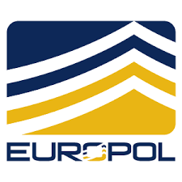

Hi, I'm Georgios Akkogiounoglou, a Cybersecurity and Machine Learning researcher with experience in both academia and industry. I work on large language models, EEG-based biometric identification, AI infrastructure, and cybersecurity research.
Experience
Europol, The Hague, Netherlands (Nov 2024 - Aug 2025) Technical Expertise Support
KTH Royal Institute of Technology, Stockholm, Sweden (Apr 2024 - Oct 2024) Machine Learning Researcher
KTH Royal Institute of Technology, Stockholm, Sweden (May 2023 - Aug 2023) AI Infrastructure Engineer
KTH Royal Institute of Technology, Stockholm, Sweden (Nov 2022 - May 2023) Security Infrastructure Developer
KTH Royal Institute of Technology, Stockholm, Sweden (Sep 2022 - Jun 2024) International Student Ambassador
Greek Army, Athens, Greece (Jan 2022 - Jul 2022) Computers & Network Engineer
Kapaweb, Athens, Greece (Apr 2021 - Oct 2021) Front End Web Developer
Education
MSc in Cybersecurity(2022-2024)
Royal Institute of Technology (KTH), Stockholm Sweden
Exchange Student in Cyber Security(2023)
University of Illinois Urbana-Champaign (UIUC), IL, United States
BSc in Informatics and Telecommunications(2015-2021)
National and Kapodistrian University of Athens, Greece
Publications
Georgios Akkogiounoglou, Arvind Kumar.